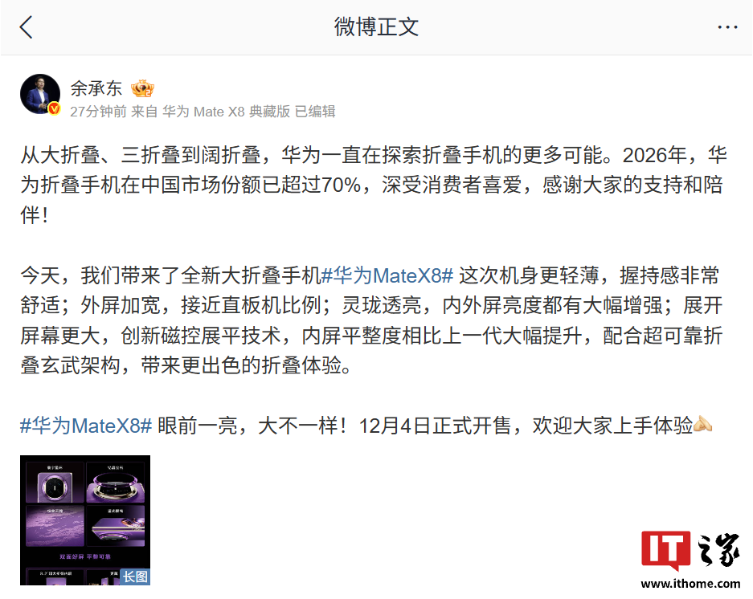
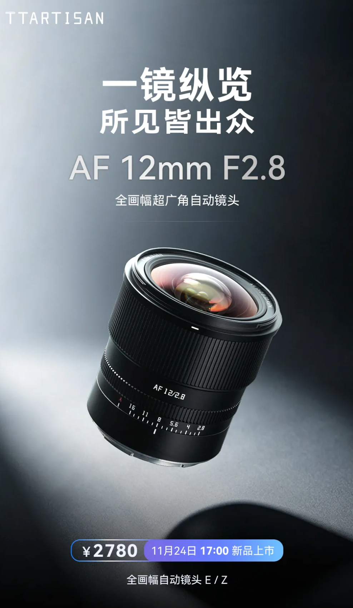
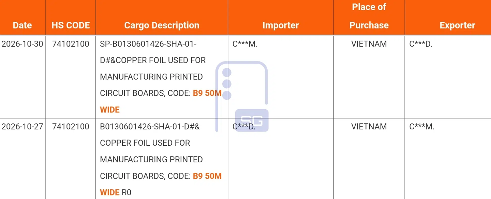
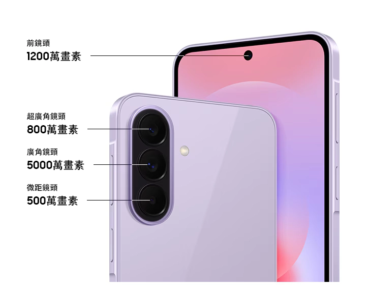
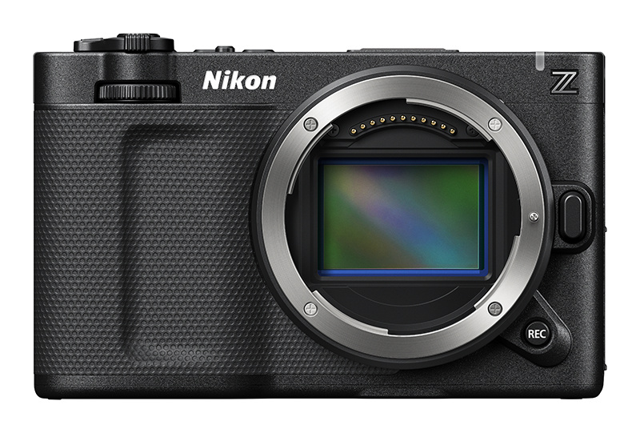
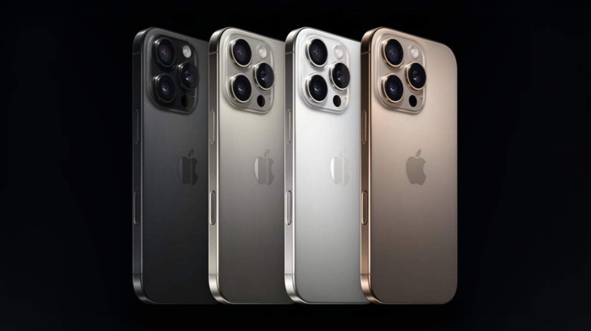
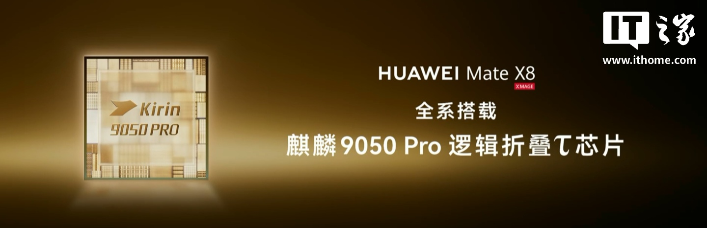
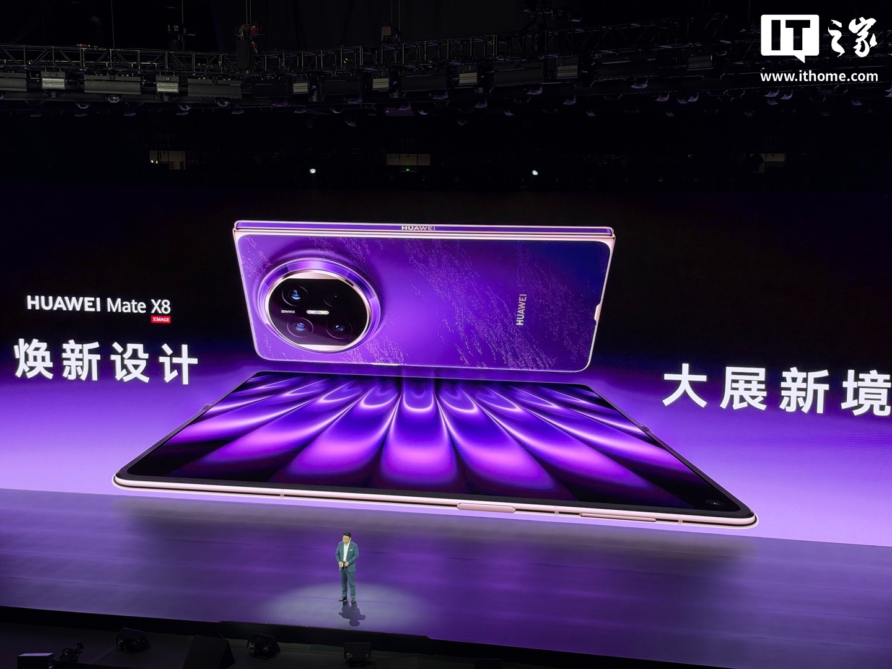
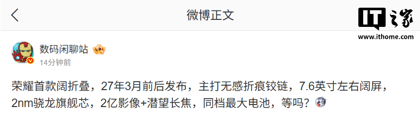
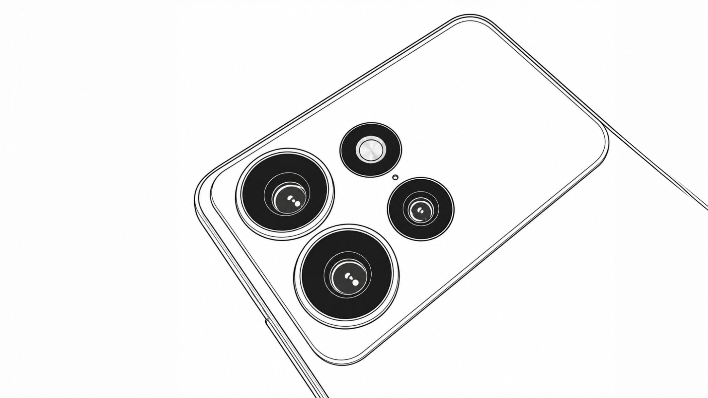

뉴스
기술의 변화, 매일 한눈에.
카메라 · 스마트폰 · AI, 해외 테크 소식을 모아 전합니다.
최근 발행2026-11-25
새로 들어온 소식
최신 뉴스
전체 4,590개 기사
2,780위안: TTArtisan 최초 풀프레임 초광각 AF 12mm F2.8 렌즈 출시
TSMC, 텍사스주 브라조스에 웨이퍼 공장 건설 신청서 제출

Seestar S30 Plus, 두 개의 2K 카메라 탑재하고 499달러에 출시 (동시 사용 불가)

Samsung과 SK하이닉스, 팹 확장으로 전문 인력 26만 명 부족… 한국 정부, 퇴역 군인 배치로 부족분 충당

Samsung Galaxy Z Fold9 Ultra 등 폴더블 스마트폰 3종 이미지 사양 유출, 메인 카메라 전작과 동일할 것으로 예상
Samsung Galaxy S27 Ultra 스마트폰, 레이저 자동 초점 모듈 제거 예정

Samsung Galaxy S27 Ultra 스마트폰 카메라 유출: 3배 망원 렌즈와 레이저 AF 모듈 동시 삭제 가능성

Samsung Galaxy A38 스마트폰, 메인 카메라 센서 크기 1/1.95인치로 축소되어 저조도 이미지 품질 저하 우려

Nikon ZR 풀프레임 카메라 2.00 펌웨어 다운로드 개시: H.265 비디오 포맷 RED 색상 과학 지원

모토로라 최초의 와이드 폴더블 스마트폰 Razr Flex, 15W 무선충전 인증 획득

iPhone 18e 유출, 거의 정사각형에 가까운 카메라 아일랜드 지적

Insta360 Ace Pro 3 신제품 발표회 12월 1일 개최, 렌즈 교환, AF, 가변 조리개 등 업그레이드 기대

위청둥: Huawei Mate X8 폴더블 디스플레이 스마트폰 전 모델에 기린 9050 Pro 로직 폴딩 τ 칩 탑재

Huawei Mate X8 폴더블 플래그십 스마트폰, 클라우드 클리어 소프트 라이트 필름 교체 지원, 2027년 1월 하순 지정 매장에서 서비스 제공
위청둥: Huawei Mate X8 폴더블 플래그십 스마트폰 전 모델, 루이잉(睿影) Z10 모듈 카메라 지원

4999위안부터: Huawei Mate 90 Air 스마트폰 출시, 7인치 초박형 대형 스크린 + Kirin 9020 프로세서 탑재
위청둥: Huawei 폴더블 스마트폰 전 세계 출하량 1,200만 대 돌파

Honor Magic 9 Pro Max, 듀얼 200MP 카메라, SD 8 Elite Extreme Gen 6 및 8000mAh 배터리 탑재하여 글로벌 출시

Honor 첫 폴더블 스마트폰, 2nm 스냅드래곤 플래그십 칩, 2억 화소 카메라 + 페리스코프 망원, 동급 최대 배터리 탑재 예정

Galaxy S27 Ultra, 레이저 자동 초점 및 3배 카메라 제거 루머

네덜란드 데이터 보호국, AI 카메라 안경 구매 비권장: 개인 정보 침해 및 보안 위험 초래
검색 결과가 없습니다
다른 검색어를 입력하거나 필터를 초기화해 보세요.